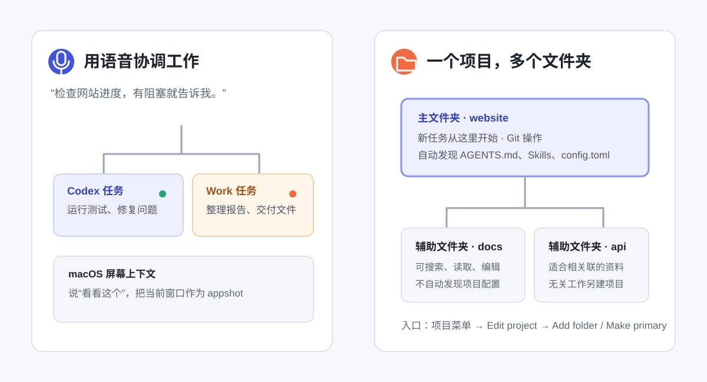

语音协作、多文件夹项目与移动端
现在你不只可以打字让 Codex 干活，还可以直接和 ChatGPT Voice 对话，让它新开任务、查进度、换方向。一个本地项目也能同时挂上几个相关文件夹，网站、文档和后端不用再被硬塞进同一个目录。

ChatGPT Voice：可以边说边指挥任务
ChatGPT Voice 由 GPT-Live 驱动。它不只是“把你说的话变成文字”，而是一段可以来回交流的语音对话。你能打断它、追问，也能让它启动、检查或调整 Chat、Work 和 Codex 里的其他任务。
| 你说什么 | 它可以做什么 | 适合场景 |
|---|---|---|
| “开一个 Codex 任务，把测试跑一遍。” | 新建任务并开始执行。 | 手上正忙，不想切回键盘。 |
| “看看现在有哪些任务卡住了。” | 检查其他任务，把阻塞和进度带回语音对话。 | 同时跑了几条工作线。 |
| “先别改登录页，改查支付页。” | 给正在工作的任务补充方向。 | 中途发现优先级变了。 |
Voice 调度的任务仍然遵守各自的权限和审批规则。语音说得再自然，也不会自动把沙盒、文件或外部系统权限放大。
第一次怎么开始语音对话
- 在 ChatGPT 桌面端打开一个全新的空白 Chat 或 Task。
- 发送消息前，选择 Start new voice chat。
- 第一次使用时，允许麦克风权限并选择声音；macOS 还会让你检查 Screen context。
- 直接说话。结束时点 End。
Voice 目前面向 Plus、Pro、Business、Edu 和 Enterprise 套餐，并可通过配对后的 iOS Remote 使用。它有按套餐计算的独立用量窗口；通过 Voice 启动的 Codex 任务还会继续消耗 Codex 额度。
说“看看这个”，把当前窗口给它看
在 macOS 的 Settings > Voice 打开 Screen context 后，你可以说“Take a look at this”或“看看这个”。ChatGPT 会把最前面的窗口制作成 appshot，结合窗口截图和可访问文本理解你正在看的内容。
这很适合“我知道哪里不对，但我说不清”的时刻，比如表格错位、设计稿按钮太挤、网页报错弹窗。要注意：appshot 可能包含当前看不见、但系统仍能读取的窗口文字，所以打开客户资料、聊天记录、账号或付款页面前要先停用 Screen context。
一个本地项目可以挂多个文件夹
以前你很容易把“项目”等同于“一个文件夹”。现在本地项目可以加入多个相关文件夹，比如主网站、产品文档和后端服务。打开项目菜单，选择 Edit project，再用 Add folder 添加目录。
| 角色 | Codex 会怎么用 | 你该放什么 |
|---|---|---|
| Primary 主文件夹 | 新任务默认从这里开始；Git、PR、Worktree 也以它为主；自动发现这里的 AGENTS.md、Skills 和 config.toml。 | 当前真正要开发和提交的主仓库。 |
| Secondary 辅助文件夹 | 可以搜索、读取和编辑，但不会自动发现里面的项目配置。 | 和主项目密切相关的文档、素材或另一套代码。 |
把鼠标移到目标文件夹上，选择 Make primary 就能更换主文件夹。远程项目目前仍只支持一个文件夹。
什么时候不该塞进同一个项目
多文件夹不是越多越好。只有它们会共同完成同一个结果时才放一起，例如“官网 + 官网文档”或“前端 + 对应后端”。客户 A 和客户 B、工作资料和私人文件、两个完全无关的仓库，应该分开建项目。
这样做不只是为了整齐，也是为了缩小 Codex 能接触到的范围。项目负责组织工作，沙盒仍然负责真正的读取、写入和联网边界。
Chat、Work 和 Codex 的记录放在哪里
- ChatGPT 视图:Chat 和 Work 对话现在放在一起，ChatGPT Projects 也能在桌面端使用。
- 云端 Work:会在网页、手机和桌面端之间同步。
- 本地 Work:留在当前电脑，不会自动变成云端对话。
- Codex 视图:保留独立的开发工作入口和单独历史记录，适合代码、Git、Review 和本地项目。
桌面端里的 Codex 还加入了 Diff 行内编辑、侧边栏 PR 审查、更快的 Computer Use 和多仓库项目。你可以把 Codex 设成默认打开的视图，也可以把 App 图标换成 Codex 标志。桌面 App 本身已面向所有 ChatGPT 套餐提供，但 Voice、模型、插件等单项能力仍各有套餐和灰度限制。
手机可以接着看和管任务
把 iPhone 与桌面主机配对后，可以在 ChatGPT 手机 App 的 Remote 里继续工作。任务实际仍在电脑上运行，所以电脑要在线；手机更像遥控器和随身验收窗口。
- 电脑打开 Settings > Connections > Control this Mac or PC，选择 Set up 或 Add。
- 批准远程访问，用手机扫描二维码。
- 手机用同一个 ChatGPT 账号和工作区确认连接。
- 打开 Remote，选择电脑与项目，再新建任务或继续已有任务。
Remote 可以从手机发起任务、追加方向、处理审批、查看 changed files、Diff 和测试结果。2026 年 8 月 18 日更新还改善了任务重连、长响应加载、语音连接与大工作区 Diff 稳定性；任务消息加载失败时可以使用 Retry。
外出时适合查进度、看图表、补一句方向和批准清楚的低风险命令；大量文件审查、复杂 Diff、账号操作和高风险命令仍建议回桌面完成。
两项进阶更新：Codex Micro 和 Amazon Bedrock
| 功能 | 它是什么 | 零基础用户要不要管 |
|---|---|---|
| Codex Micro | OpenAI 与 Work Louder 推出的限量实体控制器，可以用按键切换最多六条任务、触发技能、按住说话或调整推理强度。 | 不用。它是可选硬件，不影响普通 App 的完整使用。 |
| Amazon Bedrock | 企业可让本地 Work、Codex、CLI、IDE 和 SDK 通过 AWS 身份与账单使用 GPT-5.6 Sol、Terra、Luna。 | 个人用户可以先跳过。它需要 AWS 区域、模型权限和凭据配置，且不支持 Fast mode。 |
Bedrock 模式只覆盖本地工作流，不等同于 ChatGPT 登录；OpenAI 云端托管功能和部分插件发现也不可用。公司要求走 AWS 账号体系时，再让管理员按官方文档配置。
新版功能找不到时先查什么
| 现象 | 先检查 |
|---|---|
| 没有 Start new voice chat | 套餐、灰度开放、工作区策略，以及是否正在另一窗口使用 Voice。 |
| Voice 听不到声音 | 系统麦克风权限和 App 输入设备。 |
| “看看这个”没有反应 | Settings > Voice 的 Screen context、macOS 屏幕录制与辅助功能权限。 |
| 辅助文件夹里的规则没生效 | 这是预期行为；自动发现只看主文件夹。必要时把规则写进主文件夹或在提示词里点名。 |
| 手机看不到本地任务 | 桌面主机是否在线、Remote 是否已配对，以及当前账号是否一致。 |
| 任务消息加载失败 | 先点 Retry；再检查主机联网和配对状态。仍反复失败时更新桌面端与手机 App。 |
- 给一个本地项目添加主文件夹和一个只读的辅助资料文件夹。
- 新开 Voice 对话，口头说明哪个文件夹可以改、哪个只读。
- 让 Voice 新建 Codex 任务，只检查主项目是否和辅助资料一致。
- 用 Voice 查一次任务进度；完成后回 Codex 视图检查 Diff。
官方资料入口
- What's new:每周重要更新摘要。
- ChatGPT Voice:开始语音、任务协调、屏幕上下文和限制。
- Projects and chats:本地项目、多文件夹、主文件夹和辅助文件夹。
- Appshots:窗口截图、权限和安全说明。
- Codex Remote:手机配对、任务接力、审批和 Diff 审查。
- Amazon Bedrock:企业 AWS 配置和支持范围。